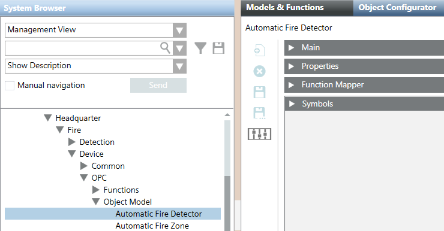
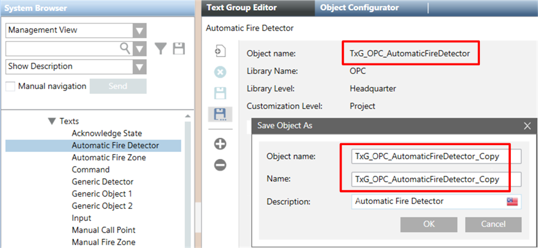
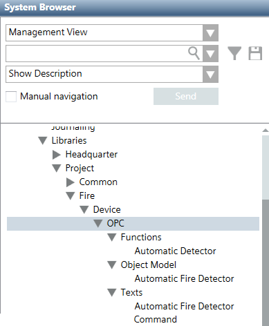

Customize the OPC Fire Library
Before you configure anything, the first step is to create a customized copy of the original library that comes with the extension module. You do this by selecting the objects, functions, and text groups that you need from the original library (under Headquarter), and copying them to a different customization level (the default target customization level is Project). The customized library that you create in this way will not be overwritten if the original library is updated.
Proceed as follows:
- System Browser is in Engineering mode.
- Select Project > System Settings > Libraries > Headquarter > Fire > Device > OPC.
- In the Headquarter OPC library tree, under Object Model, select an object that you want to use (for example, Automatic Fire Detector).
- Click the Models & Functions tab.
- Click Customize Function
 .
. - A confirmation box displays.
- Click OK.
- The object is copied to the target customization level (for example, Project > System Settings > Libraries > Project).
NOTE: The tree structure of the customized library is automatically created. - In the Headquarter OPC library tree, under Functions, select the function relating to the object (for example, Automatic Detector).
- Repeat the previous three steps for the function.
NOTE: The objects Input and Output have multiple functions available. For these, you can customize more than one function. To do this, apply this step to each function that you want to use with the object. - In the Headquarter OPC library tree, under Texts, select the text group relating to the object or to the function (for example, Automatic Fire Detector).
NOTE: You can copy text groups only if at least one object or function has been customized.
NOTE: If you customized an object with multiple functions, you still only need one text group for the object. Select the text group corresponding to any one of the functions you customized for the object. For using generic objects, see Use Generic Objects in the OPC Fire Library. - Click the Text Group Editor tab.
- Click Save As
 .
. - In the Save Object As dialog box, do the following:
a. Enter the name of the text group in the Object name and Name fields. The name must be different from the name of the original text group (see Image Text Groups Are Copied with a Different Name). For example:TxG_OPC_AutomaticFireDetector_Copy
instead of the original:TxG_OPC_AutomaticFireDetector
b. Type a descriptive text in the Description field (which can be the same as the original one, for example,Automatic Fire Detector). - A confirmation box displays.
- Click OK.
- The text group is copied to the customization level.
- Repeat the procedure for all objects, functions, and text groups you need, according to the Table Relation Among Objects, Functions, and Texts.
- If necessary, also copy the Command text group.
NOTE: Usually, you can use the same value to represent a state (input) and the corresponding command (output). However, some OPC devices require a command value that doesn’t match the state value written by that command (for example, to set the value 1 in the OPC server, the command must send the value 25). To address such cases, use the Command text group (available for all objects), that makes all command-specific values available in a separate list.


